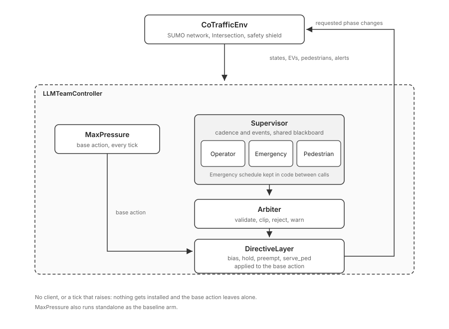

LLM Agents Traffic Controller (MARL)
Project Description
This was one of my contributions on a currently ongoing project for the Advanced Data Science Project course at ESPRIT. We're building a traffic simulation harness on top of SUMO, with the signalised junctions of a real district in Tunisia, so every controller we write runs the same scenarios on the same network and can be put side by side. We tried different strategies to compare how they fare in different scenarios, from static ones, to reinforcement learned ones, we also tried LLMs, my contribution falls here, I proposed putting a team of language model agents in the loop instead of one model call per decision: three role agents for the routine phases, for emergency vehicles and for pedestrian requests, plus a supervisor that decides who runs on which tick, and a directive layer that resolves what they emit on top of a Max-Pressure static controller instead of letting it near the network.
Three Roles, One Supervisor
Routine phase decisions go to an Operator. Emergency vehicles get an Emergency role that plans a corridor and holds it open. Pedestrian requests get their own role, because a crossing request is a different question from a queue. They share a blackboard, and a supervisor decides who runs on which tick: a fixed cadence, plus events when a new EV enters the horizon, a conflict appears or the corridor changes. A role with nothing to do is not called.
The roles return directives with a lifetime on them: bias, hold, preempt or serve_ped, each with the window it stays active for, then we have the directive layer that turns those into requested phase changes, resolved on top of the MaxPressure base, and the arbiter validates and clips them before they go anywhere. Nothing under the LLM package imports TraCI, so a bad answer can ask for a phase, it can't drive one, and the safety shield in the environment still gets the last word.
The fallback is MaxPressure running when a call times out, comes back invalid or doesn't come back at all, and an episode with a lot of fallbacks isn't really measuring a language model anymore, which is why the fallback count gets reported with the results, along with a hard cap on calls per episode, the request timeouts and what each call cost.

Making It Fast
The first version was too slow to run a benchmark on. The obvious suspect was the prompt, and the recorded Monaco runs said no: a call came back with a median of 2,938 output tokens, 2,726 of them the model thinking before it answered, so roughly 190 tokens of actual answer. Time per call correlated 0.90 with output size and 0.05 with input size, so the 32k tokens of context going in weren't where the seconds were.
Most of the calls were wasted anyway. In one Monaco seed the Emergency role ran 279 to 289 times and 44 to 51 of those (15 to 18 percent) actually changed something for an EV at a light, the rest repeated a schedule the model had already produced. With the thinking switched off those calls still cost about 7.3 s each against 2.3 s for Operator.
- Thinking off on routine ticks, and brief only when there's a conflict, an incident or congestion.
- The Emergency schedule kept in code between calls, with releases, extensions and shrinking applied directly instead of replanned by the model.
- Roles woken by what happens (a pedestrian waiting past 20 s, an EV entering the corridor) instead of by a timer.
- Less context per call: one copy of the blackboard, only EVs arriving within the next minute, only the next two or three lights on each EV's route, and each role seeing just the slice of the intersection it acts on.
Across the full test matrix a full episode on the real district now runs 91 to 110 model calls, and every cell of the 3x3 grid stays under 50, after one setting moved: pedestrians checked every 60 s instead of the 30 I'd first set, with the 20 s wait still firing the event. One real 3x3 seed did 21 calls in 43.6 s of real time, half of them back in under 2 s and nine in ten under 2.6 s, about 2.2k input tokens a call and 1,448 output tokens for the whole episode. Re-running the seed on the recorded replies gives the same call count and the same token totals.
The Benchmark
Every controller runs the same thing: the Tunisian district, 7 signalised junctions, medium demand, three scenarios (normal, emergency, incident), three seeds. Nine runs per controller, 27 in total.
Mean over the three seeds:
| scenario | metric | Max-Pressure | single LLM | LLM team |
|---|---|---|---|---|
| normal | travel time | 109.27 s | 119.42 s | 109.01 s |
| normal | waiting time | 8.86 s | 16.36 s | 8.65 s |
| emergency | travel time | 109.46 s | 118.27 s | 108.90 s |
| emergency | waiting time | 9.01 s | 15.40 s | 8.61 s |
| emergency | EV delay | 22.36 s | 28.71 s | 21.87 s |
| emergency | EV travel time | 91.57 s | 98.12 s | 90.99 s |
| incident | travel time | 109.18 s | 119.52 s | 108.77 s |
| incident | waiting time | 8.97 s | 16.45 s | 8.65 s |
The middle column is the point. One model call per decision is worse than Max-Pressure everywhere: 10 s more travel time, waiting nearly doubled, emergency vehicles no better off. Throughput is flat across the three (3719 to 3732 cars an hour on normal), so the delay is the controller's doing, not a quieter network. The team lands level with Max-Pressure, a few tenths ahead at best. The model isn't what helps. The structure around it is.
Where we're at
This is still a work in progress as of the time of me writing this, but I still wanted to showcase it as it was interesting and fun to work on, and from what we've seen it's the solution that's giving the best results consistently. We'll most definitely iterate on it as we get closer to wrapping up the project.